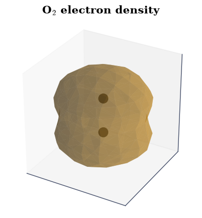
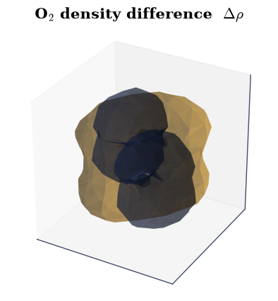
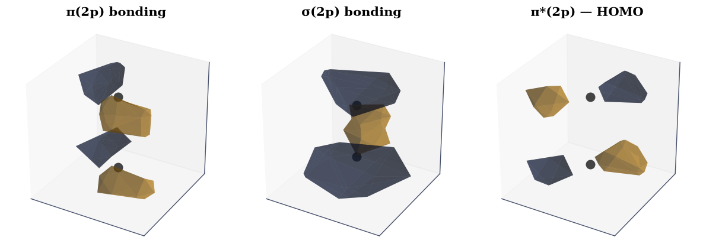
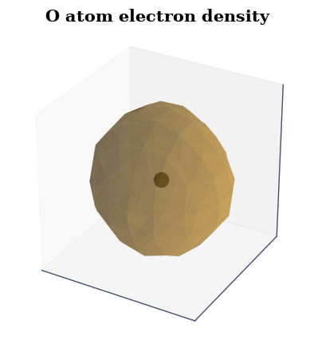
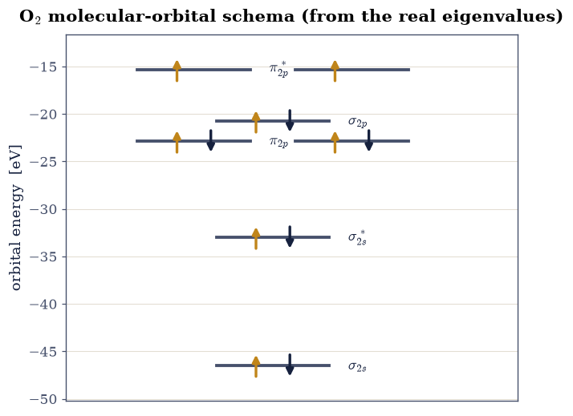

4.2 The Formation of Molecular Oxygen#
from ecp.style import header, use_style
use_style()
header(
volume="Volume IV — Electronic Structure",
number="4.2",
title="The Formation of Molecular Oxygen",
blurb="Why oxygen is magnetic, read from a real CP2K calculation: the electron "
"density and the charge that builds up on bonding, the molecular orbitals "
"themselves, and the spin-split eigenvalues that put two unpaired electrons "
"in the π* orbitals and make O₂ a triplet.",
difficulty="intermediate",
estimate="90–120 min",
source="FS 2023 · Lecture 6 (molecular orbital theory)",
)
Notebook overview#
This exercise examines the formation of triplet oxygen, the most stable and most common form of O₂. Triplet oxygen has two electrons in its two degenerate \(\pi^*\) orbitals, and according to Hund’s rules the configuration with those two electrons unpaired, with parallel spins, is the one nature chooses: the total spin is \(S=1\), a triplet, and the molecule is magnetic. A simple Lewis structure, with every electron paired, misses this entirely. Molecular-orbital theory does not, and it is the molecular-orbital picture we build and verify here.
We work from a real density-functional calculation. The course ran O₂ in CP2K, printing the electron density and the frontier molecular orbitals to cube files, and we use that genuine output: we visualise the electron density, compute the density difference that shows where charge moves when the bond forms, look at the molecular orbitals one by one, repeat for the single oxygen atom, and finally read the spin-split eigenvalues from the run to build the molecular-orbital schema and explain the paramagnetism.
Provenance. This notebook develops Lecture 6 of the course (the formation of molecular oxygen via molecular-orbital theory), an exercise designed by the author (Raymond Amador), and follows its assignments. The cube visualisations and eigenvalues are the real CP2K output of the exercise (an anonymised course run), with the volumetric cubes downsampled for size; the input deck shown is the course’s own. The full course credit is in the footer.
Reading a validation. Each task closes with a check against an independent fact: electron conservation, the electron count of the molecule versus the atom, the spin imbalance that defines the triplet. A ✗ flags a mismatch to track down, not a verdict; a ✓ is strong evidence, not proof.
Scope. Cube data are visualised as isosurfaces; energies are converted from Hartree to eV. For the chemistry see Atkins & Friedman [AF11]; the calculations were run in CP2K, the cube format stores a scalar field on a 3-D grid.
Theory in brief#
From atomic orbitals to molecular orbitals#
When two atoms bond, their atomic orbitals combine into molecular orbitals: an in-phase bonding combination, lower in energy, with charge piled up between the nuclei, and an out-of-phase antibonding combination (starred), higher in energy, with a node between them. For O₂ the valence \(2s\) and \(2p\) orbitals build the set
the two \(\pi_{2p}\) and the two \(\pi_{2p}^{*}\) each a degenerate pair. Oxygen brings six valence electrons each, twelve in all, which fill the diagram from the bottom and leave the last two electrons in the degenerate \(\pi^*\) pair.
Spin, and the triplet#
Two electrons in two equal orbitals follow Hund’s rule: one in each, spins parallel, because same-spin electrons keep apart (Pauli) and so repel less. The spins do not cancel (\(S=1\)), the molecule is a triplet, and it is paramagnetic, with a spin-only moment \(\mu=\sqrt{n(n+2)}\,\mu_B\) for \(n\) unpaired electrons. A spin-polarised calculation makes this concrete by solving for spin-up (\(\alpha\)) and spin-down (\(\beta\)) electrons separately: the two unpaired \(\pi^*\) electrons are both \(\alpha\), so the molecule has two more \(\alpha\) electrons than \(\beta\), the numerical fingerprint of the triplet that we will read straight off the eigenvalues.
What the calculation gives us#
Density-functional theory in CP2K returns the electron density \(\rho(\mathbf r)\), the individual Kohn-Sham (molecular) orbitals \(\psi_i(\mathbf r)\), and their energies \(\varepsilon_i\), written to cube files (a scalar on a 3-D grid) and to the output log. Subtracting the densities of the separated atoms from the molecule gives the density difference, a direct picture of the bond; the orbital cubes show the \(\sigma\) and \(\pi\) shapes themselves; and the eigenvalues, split by spin, build the molecular-orbital schema.
Setup#
import os
import numpy as np
import matplotlib.pyplot as plt
from skimage.measure import marching_cubes
from ecp import validate
INK, AMBER, SOFT = "#16213e", "#c0851a", "#46506b"
HARTREE_EV = 27.211386
BOHR_A = 0.529177
def data_file(name):
"""Locate a shipped data file, from the repo root (CI) or the notebook dir (Colab).
Parameters
----------
name : str
File name (or relative path) under a ``data`` directory.
Returns
-------
str
The first existing path found.
Raises
------
FileNotFoundError
If the file is not found under any candidate base.
"""
for base in ("data", os.path.join("notebooks", "04-electronic-structure", "data")):
path = os.path.join(base, name)
if os.path.exists(path):
return path
raise FileNotFoundError(name)
def read_cube(name):
"""Parse a Gaussian cube file.
Parameters
----------
name : str
Cube file name.
Returns
-------
dict
Keys: ``label``, ``origin`` (3,), ``vec`` (3, 3) voxel vectors, ``atoms``
(n_at, 3) coordinates, ``data`` the 3-D scalar grid, and ``dV`` the
voxel volume.
"""
lines = open(data_file(name)).read().splitlines()
label = lines[0].strip()
n_at = int(lines[2].split()[0])
origin = np.array(lines[2].split()[1:4], float)
vec = np.array([[float(x) for x in lines[3 + i].split()[1:4]] for i in range(3)])
ng = [int(lines[3 + i].split()[0]) for i in range(3)]
atoms = np.array([[float(x) for x in lines[6 + i].split()[2:5]] for i in range(n_at)])
data = np.array(" ".join(lines[6 + n_at:]).split(), float).reshape(ng)
return dict(label=label, origin=origin, vec=vec, atoms=atoms, data=data,
dV=abs(np.linalg.det(vec)))
def show_isosurface(cube, levels, title):
"""Render cube isosurfaces with the atoms marked, on a new 3-D figure.
Parameters
----------
cube : dict
A parsed cube from ``read_cube``.
levels : list of tuple
``(isovalue, colour)`` pairs (amber for positive lobes, navy for negative).
title : str
Figure title.
Returns
-------
matplotlib.figure.Figure
The figure with the rendered isosurface(s).
"""
d, vec, origin = cube["data"], cube["vec"], cube["origin"]
spacing = (vec[0, 0], vec[1, 1], vec[2, 2])
fig = plt.figure(figsize=(4.6, 4.4))
ax = fig.add_subplot(projection="3d")
for lvl, col in levels:
if d.min() < lvl < d.max():
verts, faces, _, _ = marching_cubes(d, level=lvl, spacing=spacing)
verts = verts + origin
ax.plot_trisurf(verts[:, 0], verts[:, 1], faces, verts[:, 2],
color=col, alpha=0.45, lw=0)
ax.scatter(cube["atoms"][:, 0], cube["atoms"][:, 1], cube["atoms"][:, 2],
s=140, color="#444", depthshade=False)
ax.set(xticks=[], yticks=[], zticks=[], title=title)
ax.set_box_aspect((1, 1, 1))
return fig
Exercise 1 — The CP2K input file#
Every calculation starts from its input deck. The course’s triplet.inp is a
spin-polarised (LSD) Hartree-Fock run with the triplet imposed through
MULTIPLICITY 3 (so \(2S+1=3\), \(S=1\)), and a &PRINT block that writes the cube
files we will use:
&DFT
LSD ! spin-polarised: separate alpha and beta densities
MULTIPLICITY 3 ! triplet (two unpaired electrons)
&PRINT
&E_DENSITY_CUBE ! write the electron density to a cube file
&END E_DENSITY_CUBE
&MO_CUBES ! write molecular-orbital cubes
NHOMO 1 ! ... the HOMO (and neighbours)
NLUMO 1 ! ... and the LUMO
&END MO_CUBES
&END PRINT
&END DFT
It ships with this notebook: triplet.inp. Those
two print directives are exactly what generate the density and orbital cubes the
rest of the exercise visualises.
Part a) Read the deck. Part b) Confirm it requests a triplet and the cube output.
MULTIPLICITY = 3 -> S = 1 (triplet); writes density cube: True
Validation 1 — the deck describes a triplet with cube output#
The input must specify multiplicity 3 (a spin-1 triplet) and request the electron density cube, the two ingredients the rest of the exercise depends on.
✓ the input deck requests a triplet (multiplicity 3) and writes the density cube [MULTIPLICITY = 3 (S = 1), E_DENSITY_CUBE = True]
True
Exercise 2 — The electron density#
Once the job finishes it writes the electron density to a cube file: the scalar \(\rho(\mathbf r)\) on a 3-D grid. We render it as an isosurface, the surface on which the density takes a chosen value, with the two oxygen nuclei marked. The density is a single smooth cloud enveloping both atoms, the hallmark of a bound molecule rather than two separate ones.
Part a) Read and render the O₂ electron-density cube. Part b) Confirm it is a physical density.
findfont: Failed to find font weight 600, now using 700.
findfont: Failed to find font weight 600, now using 700.

Fig. 33 Isosurface of the O₂ electron density from the CP2K calculation (amber, \(\rho=0.05\,e/a_0^3\)), with the two oxygen nuclei marked. The density forms a single connected cloud spanning both atoms, the signature of a bonded molecule. (Cube downsampled for display.)#
Validation 2 — a physical electron density#
A real electron density is non-negative everywhere. (The integral under-counts here only because the cube was downsampled for size, blurring the sharp peaks at the nuclei; we check the electron count properly in Exercises 3 and 5.)
✓ the electron density is non-negative everywhere (to numerical noise) [min ρ = -8.76e-06, max ρ = 0.946]
True
Exercise 3 — The density difference (Assignment 1)#
The total density is striking but not the most informative quantity; the difference is. Subtracting the densities of the two separate oxygen atoms from the molecule’s density, \(\Delta\rho=\rho_{\mathrm{O_2}}-\rho_{\mathrm{O}}-\rho_{\mathrm{O}}\), isolates exactly the charge that rearranges when the bond forms: amber where electrons accumulate, navy where they are depleted. Because the molecule and the two atoms hold the same total number of electrons, the difference must integrate to zero, which is our check.
Part a) Render the density-difference cube. Part b) Confirm electron number is conserved.

Fig. 34 Electron-density difference \(\Delta\rho=\rho_{\mathrm{O_2}}-2\rho_{\mathrm{O}}\) from the CP2K calculation: amber where charge accumulates on bonding, navy where it is depleted (\(\pm0.004\,e/a_0^3\)). The redistribution into the bonding region is what a Lewis double bond depicts only schematically. (Cube downsampled for display.)#
Validation 3 — electron conservation#
Forming a bond moves charge around but neither creates nor destroys it, so the density difference must integrate to ≈ 0.
✓ the density difference integrates to zero (electrons conserved) [got -0.0194206 vs expected 0 (rtol=1e-06)]
True
Exercise 4 — The molecular orbitals (Assignment 2)#
The calculation also prints individual molecular orbitals. Their cube file
names encode which orbital each is: a comment line reads WAVEFUNCTION i spin s i.e. HOMO - n, so the highest occupied (the HOMO) is \(n=0\), the one below it
\(n=1\), and so on. Decoding those tags identifies three valence orbitals worth
seeing: a bonding \(\pi_{2p}\), a bonding \(\sigma_{2p}\), and the antibonding
\(\pi^*\) that is the HOMO and holds the two unpaired electrons. Bonding orbitals
concentrate charge between the nuclei; the antibonding \(\pi^*\) has a node there,
visible as the change of lobe colour across the bond.
Part a) Render the three orbitals. Part b) Confirm they are proper (normalised) one-electron orbitals.

Fig. 35 Three O₂ molecular orbitals from the CP2K calculation (amber/navy = opposite sign of the wavefunction): the bonding \(\pi_{2p}\) and \(\sigma_{2p}\), which build up amplitude between the nuclei, and the antibonding \(\pi^*\) (the HOMO), whose node between the atoms is the colour change across the bond. The two electrons in this \(\pi^*\) pair are the unpaired ones. (Cubes downsampled for display.)#
Validation 4 — proper one-electron orbitals#
Each Kohn-Sham orbital is normalised, so \(\int|\psi|^2\,dV\) must be the same for all three (the same value the downsampling preserves), confirming they are genuine single-electron molecular orbitals.
✓ the three orbitals share one normalisation (∫|ψ|² equal) [max|Δ| = 0.0329698 (rtol=0.05, atol=1e-09)]
True
Exercise 5 — The oxygen atom (Assignment 3)#
The same calculation for a single oxygen atom gives a reference. Its density is one spherical-ish cloud about a single nucleus, and crucially it holds half the electrons of the molecule. Comparing the integrated densities is a clean, downsampling-proof check: the molecule must contain exactly twice the atom’s electrons (16 versus 8), so the ratio of the integrals is 2 even though each absolute integral is undercounted by the coarse grid.
Part a) Render the O-atom density. Part b) Confirm the molecule has twice the atom’s electrons.

Fig. 36 Electron density of a single oxygen atom from the CP2K calculation (amber, \(\rho=0.05\,e/a_0^3\)): one cloud about one nucleus, holding eight electrons, half the molecule’s sixteen. (Cube downsampled for display.)#
∫ρ(O₂) / ∫ρ(O) = 1.998 (O₂ has 16 electrons, O has 8 -> ratio 2)
Validation 5 — the molecule has twice the atom’s electrons#
The ratio of the integrated densities must be 2: the molecule is two oxygen atoms’ worth of electrons.
✓ O₂ holds twice the electrons of an O atom (integral ratio = 2) [got 1.99767 vs expected 2 (rtol=0.03)]
True
Exercise 6 — The eigenvalues and the molecular-orbital schema (Assignment 4)#
Finally we read the energies. The output lists the occupied eigenvalues separately for spin-up (\(\alpha\)) and spin-down (\(\beta\)), and the asymmetry is the whole story: there are nine occupied \(\alpha\) orbitals but only seven occupied \(\beta\), a difference of two. Those two extra spin-up electrons sit in the degenerate \(\pi^*\) pair with no spin-down partners, exactly the unpaired electrons of the triplet. Dropping the two core \(1s\) states, we plot the valence levels at their real energies and fill them with \(\alpha\) (up) and \(\beta\) (down) electrons, reproducing the molecular-orbital schema from the calculation itself.
Part a) Build the schema from the real eigenvalues. Part b) Confirm the spin imbalance, and the paramagnetic moment it implies.

Fig. 37 Molecular-orbital schema of O₂ built from the real CP2K eigenvalues (valence levels, in eV; the two core 1s states are omitted): spin-up (α, amber) and spin-down (β, navy) electrons fill the levels. Every level is paired except the two degenerate π* orbitals, which hold one α electron each: the two unpaired electrons that make the ground state a triplet and O₂ paramagnetic.#
occupied: 9 α, 7 β -> 2 unpaired electrons; μ = 2.83 μ_B
Validation 6 — two unpaired electrons, a paramagnetic triplet#
The spin-up/spin-down imbalance must be exactly two unpaired electrons, giving spin \(S=1\) and the spin-only moment \(\mu=\sqrt{8}\approx2.83\,\mu_B\): O₂ is a paramagnetic triplet, the result a Lewis structure cannot give.
✓ O₂ has two unpaired electrons (S=1) and a non-zero magnetic moment [2 unpaired → μ = 2.83 μ_B]
True
Notebook summary#
We worked the real CP2K calculation of molecular oxygen end to end: the electron density, the bonding charge build-up in the density difference (which integrates to zero, conserving electrons), the bonding \(\pi\) and \(\sigma\) and antibonding \(\pi^*\) molecular orbitals, and the single oxygen atom for comparison. The spin-resolved eigenvalues told the central story: nine occupied \(\alpha\) orbitals against seven \(\beta\), the difference of two being the unpaired electrons in the degenerate \(\pi^*\) pair. That is why ground-state O\(_2\) is a paramagnetic triplet, the result a Lewis structure cannot give.
Outlook#
The spin density. The calculation also wrote a spin-density cube, \(\rho_\alpha-\rho_\beta\); rendering it shows the unpaired-electron density sitting exactly in the \(\pi^*\) orbitals.
Singlet oxygen. Pairing the two \(\pi^*\) electrons gives the reactive ¹Δg state, 0.98 eV higher; it is multireference, so a single-determinant method describes it only crudely.
The second row. B₂ is paramagnetic for the same reason, while C₂ and N₂ are not; the \(\sigma_{2p}/\pi_{2p}\) ordering switches before O₂ through s–p mixing.
Beyond Hartree-Fock. O₂’s bond energy needs correlated methods (CCSD(T)) or good functionals; Hartree-Fock alone underbinds it badly.
References#
Peter W. Atkins and Ronald S. Friedman. Molecular Quantum Mechanics. Oxford University Press, 5 edition, 2011.
from ecp.style import footer
footer()